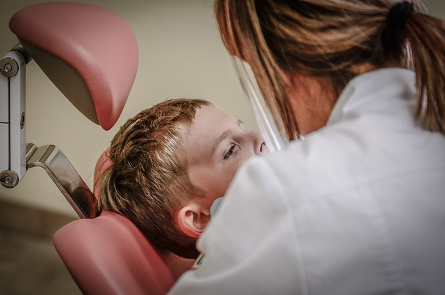

GUIA DE SEGURANÇA ULTRASSOM MICROFOCADO
Ultraformer MPT: dormência ou fraqueza facial após a sessão
Formigamento, dormência e mudança de movimento não são a mesma coisa. Registre quando começaram e procure orientação adequada, sem presumir a causa ou esperar um prazo genérico.

Dor, formigamento e fraqueza precisam ser descritos com clareza
Após ultrassom microfocado, estudos sobre alguns aparelhos relatam sensibilidade local ou formigamento; relatos também descrevem eventos raros envolvendo função sensorial ou motora. Isso não permite determinar pela internet se um sintoma após uma sessão foi causado pelo aparelho, se é esperado para aquela pessoa ou quanto deve durar.
A instrução de uso do fabricante para Ultraformer MPT descreve fraqueza muscular local transitória e dormência transitória que podem ocorrer por inflamação de nervos motores ou sensitivos. O documento não estima a frequência individual nem substitui avaliação clínica. O serviço local não publica as ponteiras, parâmetros ou protocolo usados em cada área; confirme a versão do manual aplicável ao aparelho da clínica.
O que fazer após notar um sintoma
Entre em contato com a equipe responsável o quanto antes se surgir dormência, formigamento persistente, dor que aumenta ou dificuldade para mover uma região do rosto após o procedimento. Informe horário de início, área tratada, como o sintoma mudou, fotos ou vídeos úteis e qualquer outra alteração. Não massageie, aqueça, aplique medicamentos ou faça outro procedimento na área sem orientação clínica.
A equipe pode orientar avaliação presencial ou encaminhamento. Um relato online ou uma fotografia não distingue irritação nervosa, alteração local ou outra causa; uma nova sessão deve aguardar esclarecimento profissional.
Reconheça sinais que não devem esperar resposta da clínica
Fraqueza ou assimetria facial de início súbito também pode ser sinal de AVC. Se vier junto de fala alterada, fraqueza ou dormência em braço ou perna, confusão, alteração visual, perda de equilíbrio ou dor de cabeça intensa e súbita, chame o serviço de emergência imediatamente — mesmo que os sinais melhorem. No Brasil, ligue 192 (SAMU) ou procure um pronto atendimento sem dirigir por conta própria.
Se houver fraqueza facial isolada que começou de repente, procure avaliação médica urgente. Não presuma que seja efeito do procedimento; primeiro é necessário excluir condições tempo-dependentes.
O que as evidências permitem concluir — e o que não permitem
Uma revisão de segurança de microfocused ultrasound with visualization (MFU-V) descreveu parestesia e paresia entre eventos raros relatados para Ultherapy, uma tecnologia específica. Uma revisão de complicações de 2026 aponta que a literatura é heterogênea e composta em grande parte por séries e relatos. Esses resultados não estimam a frequência no Ultraformer MPT nem confirmam causalidade ou desfecho para um aparelho diferente.
O manual do Ultraformer MPT e a literatura sobre outros sistemas são referências para discussão de segurança, não substitutos do manual aplicável ao modelo local, da avaliação clínica ou de orientação de urgência.
Referências e limites
- Classys: documentação do Ultraformer MPT — o manual do fabricante menciona dor transitória, parestesia e formigamento; confirmar versão e instruções aplicáveis ao aparelho local.
- Hitchcock et al. (2014): revisão de segurança de MFU-V — dados de Ultherapy/MFU-V, não uma estimativa para Ultraformer MPT.
- Revisão e consenso de complicações de MFU-V (2026) — sintetiza eventos e limitações de uma literatura heterogênea.
- American Stroke Association: sinais de alerta de AVC — sinais súbitos exigem contato imediato com o serviço de emergência; use o número local.
Modelo, ponteira, parâmetros e fluxo de atendimento da clínica precisam de confirmação profissional. Este guia não diagnostica sintomas nem substitui atendimento médico.